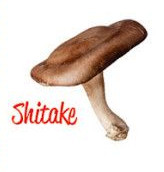
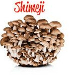
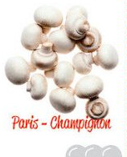

☰
Página Inicial
Nossos Cogumelos
Cogumelos Comestiveis
Cogumelos Venenoso
Fale Conosco
Espécies Comestíveis
Aqui vamos falar sobre os cogumelos comestiveis!
Shitake
Usado em pratos mais sofisticados
Acompanha uma boa carne ou uma massa

Shimeg
Sabor mais frutado
Bom com saladas e afins

champignon
Mais comumente usado em strognoffs e massas
